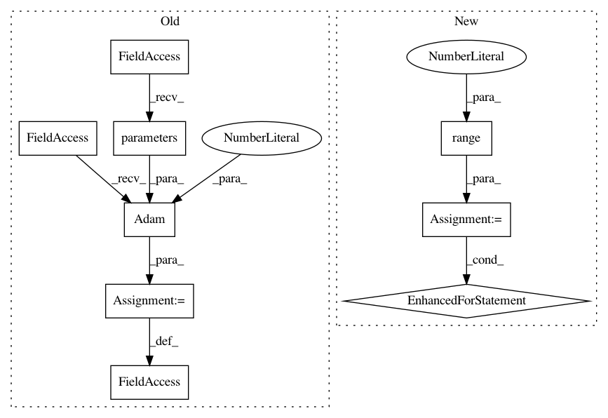

3f0f8ca3bda791ceba269ad98a9677180abbc9f0,examples/node2vec.py,,,#,66
Before Change
return F.log_softmax(x, dim=1)
classifier = Classifier().to(dev)
optimizer_c = torch.optim.Adam(classifier.parameters(), lr=0.001)
def train_classifier():
classifier.train()
optimizer_c.zero_grad()
After Change
return loss.item()
for epoch in range(1, 51):
loss = train()
// class Classifier(torch.nn.Module):
// def __init__(self):
// super(Classifier, self).__init__()
// self.lin1 = torch.nn.Linear(feature_dim, feature_dim)
In pattern: SUPERPATTERN
Frequency: 4
Non-data size: 9
Instances
Project Name: rusty1s/pytorch_geometric
Commit Name: 3f0f8ca3bda791ceba269ad98a9677180abbc9f0
Time: 2019-07-27
Author: matthias.fey@tu-dortmund.de
File Name: examples/node2vec.py
Class Name:
Method Name:
Project Name: rusty1s/pytorch_geometric
Commit Name: b44364811b14bde01d84554624a9bffa0e4976e3
Time: 2018-03-07
Author: matthias.fey@tu-dortmund.de
File Name: examples/cora_gcn.py
Class Name:
Method Name:
Project Name: OpenNMT/OpenNMT-py
Commit Name: b87368e1e7fd832b505db9cc08015ac7af8f95de
Time: 2016-12-23
Author: jvanamersfoort@twitter.com
File Name: VAE/main.py
Class Name:
Method Name: